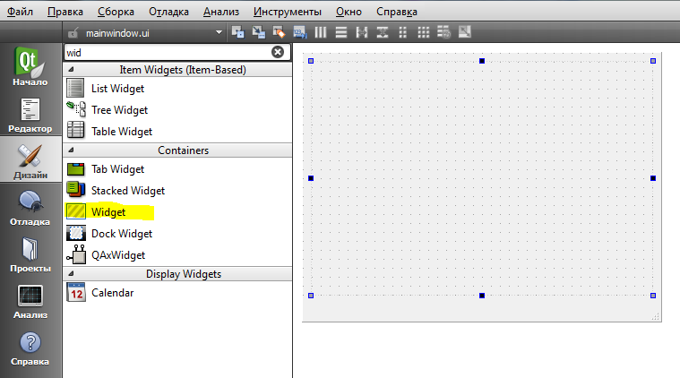
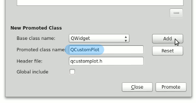
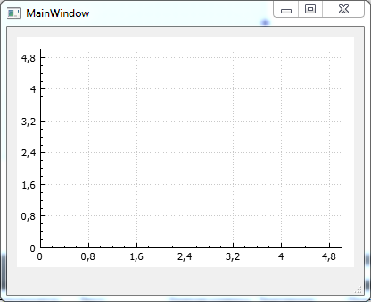
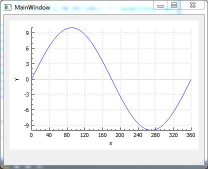
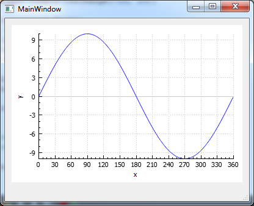
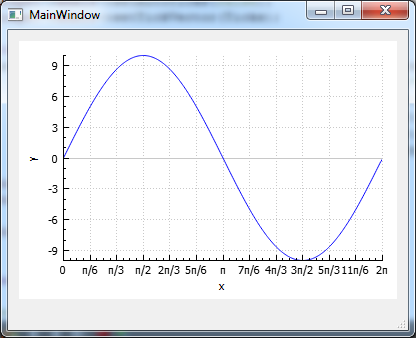

https://blablacode.ru/programmirovanie/453
Вывод графиков в Qt 5 при помощи QCustomPlot
Body
Одной из распространенных задач программирования является - построение графиков.
Вы конечно можете создать новый проект и используя библиотеки вроде freeglut набросать программку для отрисовки графика, но зачем заниматься изобретением велосипеда? Зачем рисовать оси самостоятельно, если это можно сделать одной строкой при помощи библиотеки, которая не особо то и раздуем ваш код.
Мой выбор для таких вещей - QCustomPlot. Это библиотека для Qt.
Прежде всего скачайте библиотеку с сайта QCustomPlot. Там всего два файла, которые нужно добавить к проекту.
Я просто создаю новый проект Qt и ложу их в папку с исходниками, после чего нажимаю правой клавишей по проекту -- Добавить существующие файлы и выбираю qcustomplot.h и qcustomplot.cpp.
Теперь идем в настройки проекта (pro файл).
Тут нужно добавить
QT += printsupport
А также, проконтролировать появились ли добавленные файлы в SOURCES и HEADERS.
Теперь переходим к редактированию формы.

Добавляем QWidget и нажав по нем правой клавишей мыши -- Преобразовать в, преобразовываем в QCustomPlot

Можно собрать. Вы увидите оси координат.

Теперь давайте "нарисем" синусоиду.
Для этого заинклудте math.h, мы будем использовать число пи и функцию синуса из этой библиотеки.
Добавим в конструктор окна такой код:
|
1 2 3 4 5 6 7 8 9 10 11 12 13 14 15 16 17 |
// генерируем данные QVector<double> x(360), y(360); // строить будем до 360 градусов for (int i=0; i<360; ++i) { x[i] = i; y[i] = 10*sin(x[i]*M_PI/180); // вычисляем синус } // создаем график и добавляем данные: ui->widget->addGraph(); ui->widget->graph(0)->setData(x, y); // задаем имена осей координат ui->widget->xAxis->setLabel("x"); ui->widget->yAxis->setLabel("y"); // задаем размеры осей ui->widget->xAxis->setRange(0, 360); ui->widget->yAxis->setRange(-10, 10); ui->widget->replot(); |
После компиляции вы увидите результат:

Все классно! Да вот подписи на осях нам не сильно подходят. Я хочу чтобы шаг был 30 градусов.
В принципе для этого достаточно изменить вектор TickVector.
|
1 2 3 4 5 6 7 8 |
QVector<double> Ticks; // вектор с шагом в 30 градусов int i = 0; while(i<=360) { Ticks << i; i+=30; } ui->widget->xAxis->setAutoTicks(false); // выключаем автоматические отсчеты ui->widget->xAxis->setTickVector(Ticks); // задаем созданный нами вектор |
После этого вы увидите такие оси:

Но мы зайдем немного дальше и изменим градусы на доли числа Пи.
Для этого необходимо сформировать вектор TickVectorLabels из QString.
С этим массивом все не так просто. Пришлось заполнить его вручную.
|
1 2 3 4 5 6 7 8 9 10 |
QVector<QString> Labels; Labels << "0" << QString::fromUtf8("π/6") << QString::fromUtf8("π/3") << QString::fromUtf8("π/2") << QString::fromUtf8("2π/3") << QString::fromUtf8("5π/6") << QString::fromUtf8("π") << QString::fromUtf8("7π/6") << QString::fromUtf8("4π/3") << QString::fromUtf8("3π/2") << QString::fromUtf8("5π/3") << QString::fromUtf8("11π/6") << QString::fromUtf8("2π");
ui->widget->xAxis->setAutoTickLabels(false); ui->widget->xAxis->setTickVectorLabels(Labels); |
Вот как это выглядит:

Как видите все получилось ;) Успехов в построении графиков.
�